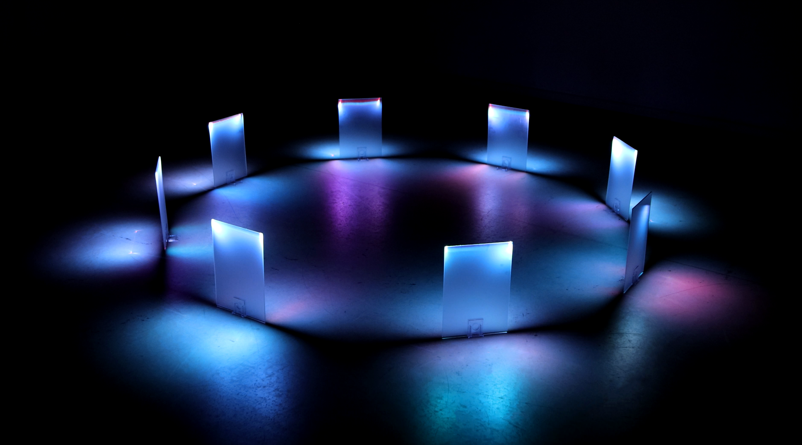
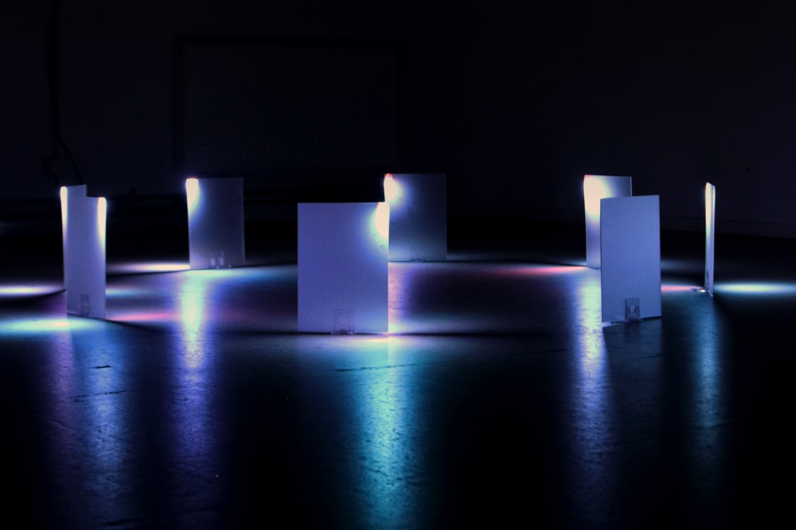
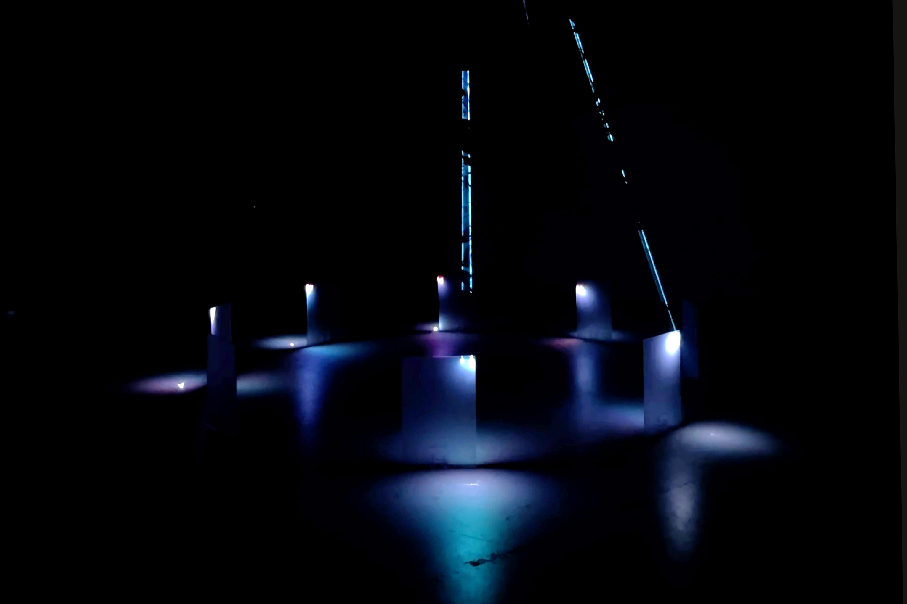
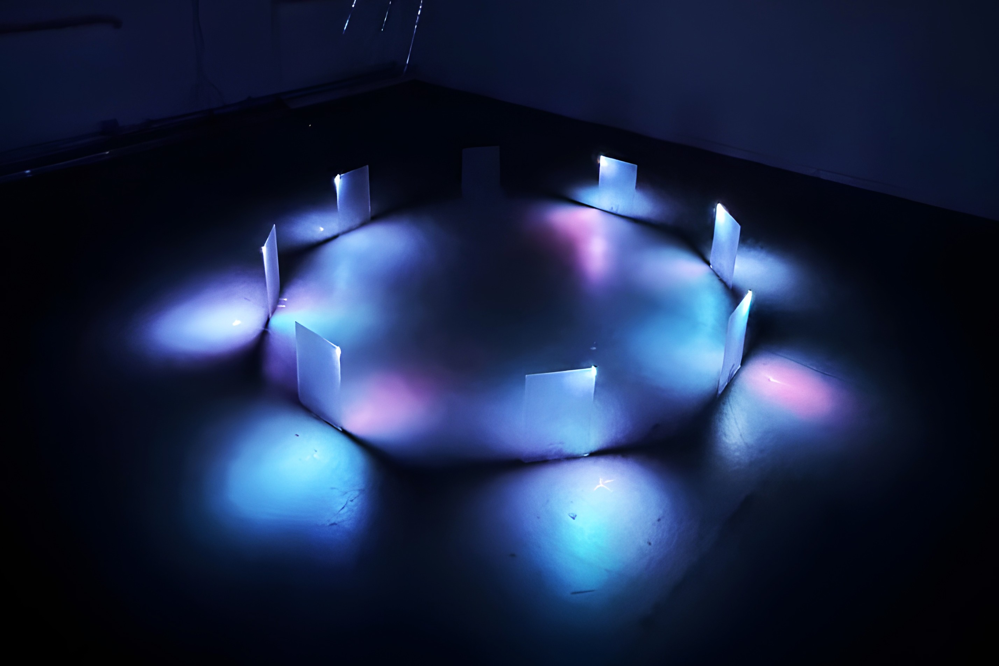
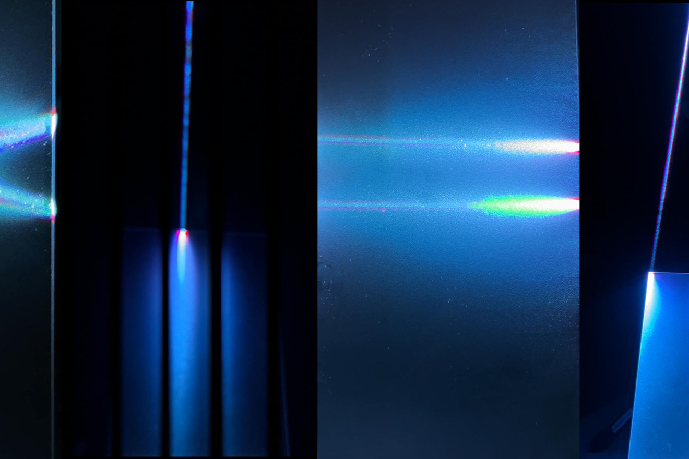

The Altar is a scenographic lighting installation that interrogates the intersections of perception, sanctity, immersion, and identity within the fabric of contemporary digital culture. The work originates from a fundamental inquiry:
It begins with a simple question:The work is composed of a series of translucent vertical surfaces installed at eye level and arranged across the floor plane. A single beam of light enters the space and interacts with these surfaces, scattering softly across their surfaces. The light is further transformed through its reflection on the floor, generating an additional layer of shifting visual phenomena that expands the spatial perception of the installation.
When combined with atmospheric haze, the environment becomes an immersive field of light and sensation. Within this space, the viewer experiences a subtle dissolution of boundaries between body, space, and image.
Rather than following a linear narrative, the light operates as a rhythm and an emotional interface, guiding a process of perceptual absorption. The installation unfolds as a continuous loop without a fixed beginning or end, where perception is constantly reconstructed through reflections, refractions, and movement.